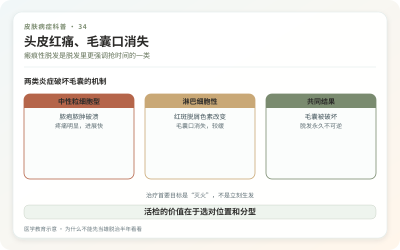
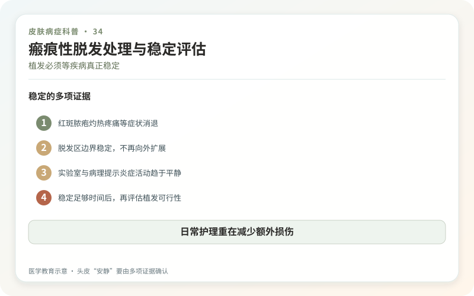

瘢痕性脱发不是一种单一疾病，而是一组会让炎症破坏毛囊、最后被瘢痕组织替代的脱发。扁平苔藓性毛囊炎、盘状红斑狼疮、中央离心性瘢痕性脱发、毛囊炎性脱发等病因和治疗不同，但共同点是：毛囊一旦完全被瘢痕取代，通常不能再长出头发。
因此它比“每天掉多少根”更值得看重活动信号：头皮持续疼、痒、灼热，毛囊周围发红脱屑，出现脓疱、结痂，发际线异常后退，或脱发区变得光滑、看不到毛囊口。

为什么不能先当雄脱治半年看看？
雄激素性脱发是毛囊逐渐微小化，毛囊口仍在；斑秃通常为光滑斑片但也保留毛囊；真菌感染、牵拉性脱发和拔毛癖还可模仿。医生会用皮肤镜看毛囊口、毛周鳞屑和血管，比较不同区域，必要时在活动边缘做头皮活检。
活检不是为了“证明很严重”，而是识别炎症类型、指导系统用药。拖到中心已经完全光滑再取样，可能只看到终末瘢痕，诊断信息反而少。

治疗首要目标是灭火，不是立刻生发
方案可能包括外用或毛囊周围注射糖皮质激素、抗炎抗感染药、羟氯喹、免疫调节药等，取决于具体病型。系统药物涉及眼科、血液、肝肾和妊娠等监测，必须由医生管理。
治疗是否有效要看疼痒是否减少、毛周红斑和鳞屑是否消退、脱发边缘是否停止扩大，而不是两周有没有冒新发。炎症稳定后，未完全破坏的毛囊可能有部分恢复；已经瘢痕化的区域则主要讨论遮盖或重建。
植发不是活动期的急救
在炎症仍活跃时植发，移植毛囊也可能被同一疾病破坏，手术创伤还可能诱发加重。通常要在疾病稳定足够时间后，由熟悉瘢痕性脱发的皮肤科和植发外科共同评估，且成活率和密度预期要比普通雄脱更保守。
假发、发片、头皮微色素等可改善外观，但微色素本质上是纹刺，活动性炎症、感染或诊断不清时不宜贸然操作。
日常护理重在减少额外损伤
暂停紧绷发型、化学烫染、高温拉扯和抓挠，使用温和洗护。不要因为怕掉发就减少清洁，脓疱结痂反而需要按医嘱护理。生姜、辣椒、微针滚轮和“毛囊排毒”会增加炎症，不能复活瘢痕毛囊。
每月用固定分缝和比例尺拍照，并记录疼痒、灼热和脱屑，比只看掉发量更能监测活动。任何新出现的脓疱、快速扩大或药物不良反应都应提前复诊。
瘢痕性脱发的治疗价值首先是保住尚未被毁的毛囊。越早明确类型，越有机会阻止不可逆部分继续扩大。
这是脱发里更强调“抢时间”的一类
当毛囊被炎症永久破坏，已经形成的光滑瘢痕区通常难以重新长出正常毛发。治疗目标首先是让活动性炎症停下来，保护尚存毛囊，而不是立刻追求生发。头皮疼痛、灼热、瘙痒、脓疱、鳞屑，发际线持续后退或毛囊口消失，都应尽快面诊。症状轻不代表没有进展，反之疼痛也不等于一定属于瘢痕性脱发。
活检的价值在于选对位置
医生可能借助皮肤镜寻找仍有活动炎症的边缘，再决定是否活检。只从完全光滑的中央取样，可能只看到终末瘢痕，难以判断类型。因此面诊前不要大面积涂药、抓破或染烫，带上既往照片和所有用药记录。病理结果需要与临床分布和皮肤镜结合，不能把一行报告脱离现场单独解读。
植发必须等疾病真正稳定
在炎症仍活动时移植，移入毛囊也可能再次受损；即使稳定，瘢痕区血供和成活率也与普通雄激素性脱发不同。是否手术、稳定多久、先做多少测试移植，都应由熟悉该病的团队评估。随访时记录症状、红斑鳞屑和脱发边界，不要只数掉发根数。把“止损”放在“填满”之前，是这一类疾病最重要的顺序。
头皮“安静”要由多项证据确认
没有明显痒痛只是一个信号，还要看边界是否继续扩大、毛囊周围红斑鳞屑是否消退、皮肤镜和标准照片是否稳定。自行停药后短期无症状，不能证明疾病已经永久静止。与医生约定复诊间隔和减药规则，能降低悄然进展到发现时已经失去毛囊的风险。
日常避免紧绷发型、频繁化学烫染和反复抓挠，但不要把所有类型都归因于护理不当。不同瘢痕性脱发机制不同，药物和预后也不同。准确分型、尽早控制活动，再讨论遮盖与重建，才是从疾病逻辑出发的顺序。